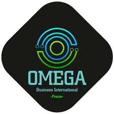
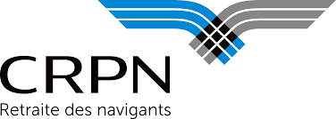

Parcours
Expériences Professionnelles
Découvrez mes immersions en entreprise réalisées pendant mon BTS SIO (SLAM). Des expériences concrètes qui ont forgé mon profil technique.

2025
⏱ 5 Semaines
Omega Business International
Stage 1ère année - DéveloppementDéveloppement d'un prototype de contrôleur de feux tricolores sur carte Arduino, incluant la logique de séquencement, le mode piéton et un compte à rebours affiché sur écran LCD.
- Mission 1 – Développement : Programmation d'une machine à états en C/C++, implémentation du mode piéton et du compte à rebours.
- Mission 2 – Intégration continue : Configuration d'un pipeline GitLab CI et création de tests unitaires pour chaque fonction critique.
- Mission 3 – Documentation : Rédaction d'un manuel utilisateur, d'un guide technique et présentation orale devant l'équipe R&D.

2026
⏱ 5 Semaines
CRPN – Retraite des navigants
Stage 2ème année - Dev LogicielIntégré au sein de la Caisse de Retraite du Personnel Navigant (CRPN), j'ai participé activement à l'évolution des outils internes. J'ai travaillé sur le développement d'applications, l'optimisation des bases de données et assuré la continuité des services.
- Projet confié : Développement d'une application nommée "Contrathèque".
- Objectif : Regrouper et centraliser l'ensemble des factures de l'entreprise sur une seule et même plateforme.